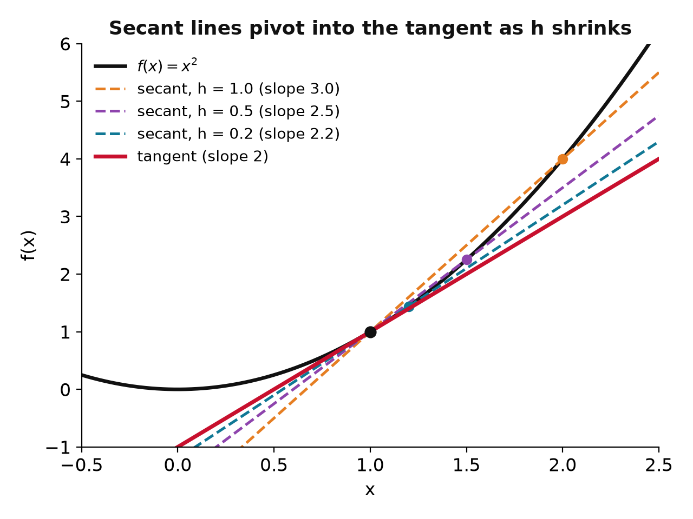
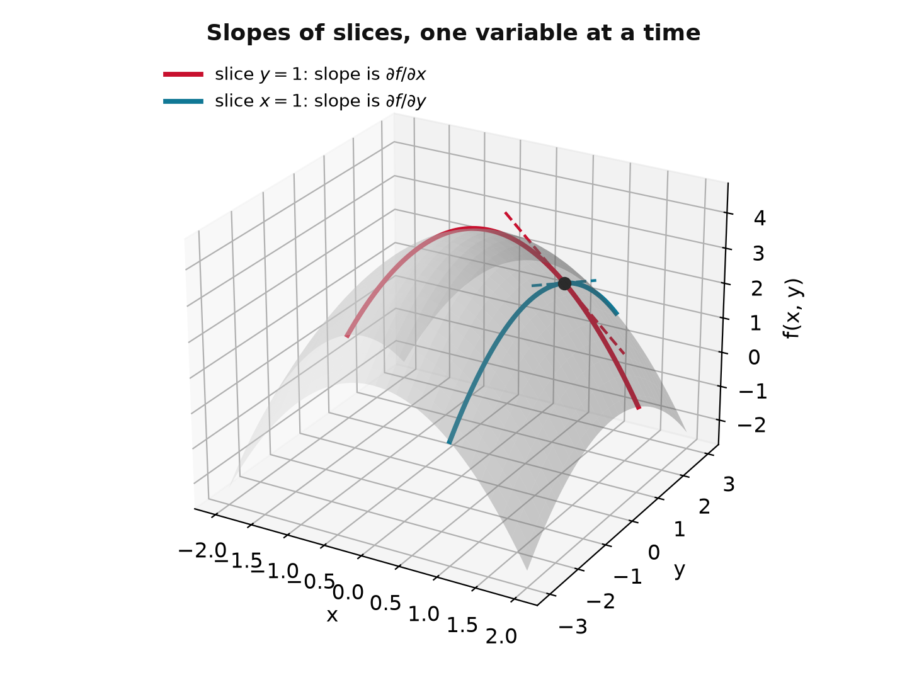
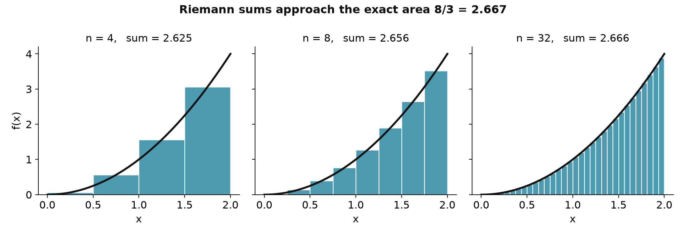
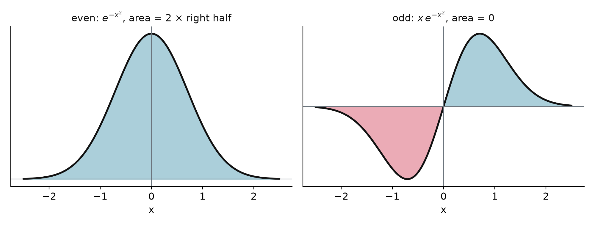

Chem 3240 · Appendix A.1
\text{rate} = -\frac{d[\mathrm{A}]}{dt} \qquad\qquad q = \int_{T_1}^{T_2} C_p\, dT

f'(x) = \lim_{h \to 0}\frac{f(x+h) - f(x)}{h}
secant pivots into the tangent; the step prediction f(x) + f'(x)\,h misses the curve by h^2
{
const f = x => x * x, x0 = 1, slope = 2 + hh, pred = f(x0) + 2 * hh;
const xs = d3.range(-0.5, 2.81, 0.02);
const curve = xs.map(x => ({x, y: f(x)}));
const sec = xs.map(x => ({x, y: f(x0) + slope * (x - x0)}));
const tan = xs.map(x => ({x, y: f(x0) + 2 * (x - x0)}));
return Plot.plot({
width: 620, height: 400,
x: {domain: [-0.5, 2.8], label: "x"}, y: {domain: [-1, 7], label: "f(x)"},
marks: [
Plot.line(curve, {x: "x", y: "y", stroke: "#111", strokeWidth: 2.5}),
Plot.line(sec, {x: "x", y: "y", stroke: "#C8102E", strokeWidth: 2, strokeDasharray: "6,4"}),
Plot.line(tan, {x: "x", y: "y", stroke: "#1f3a93", strokeWidth: 2}),
Plot.ruleX([x0 + hh], {y1: pred, y2: f(x0 + hh), stroke: "#107895", strokeWidth: 4}),
Plot.dot([{x: x0, y: f(x0)}, {x: x0 + hh, y: f(x0 + hh)}], {x: "x", y: "y", fill: "#C8102E", r: 5}),
Plot.dot([{x: x0 + hh, y: pred}], {x: "x", y: "y", fill: "#107895", r: 5, symbol: "square"})
]
});
}\frac{d}{dx} f(g(x)) = \frac{df}{dg}\cdot\frac{dg}{dx}
Differentiate f(x) = x^2\, e^{-\alpha x^2} (product rule, chain rule inside the exponential):
\frac{df}{dx} = (x^2)'\, e^{-\alpha x^2} + x^2\, \big(e^{-\alpha x^2}\big)' = 2x\, e^{-\alpha x^2} + x^2\,(-2\alpha x)\, e^{-\alpha x^2} = 2x\,(1 - \alpha x^2)\, e^{-\alpha x^2}
| f(x) | f'(x) | f(x) | f'(x) | |
|---|---|---|---|---|
| x^n | n x^{n-1} | e^{ax} | a\,e^{ax} | |
| \sin x | \cos x | \cos x | -\sin x | |
| \ln x | 1/x | \tan x | \sec^2 x | |
| e^{ikx} | ik\,e^{ikx} | e^{-\alpha x^2} | -2\alpha x\, e^{-\alpha x^2} |

\frac{\partial f}{\partial x} = \lim_{h \to 0}\frac{f(x+h,\,y) - f(x,\,y)}{h}
u(x,t) = f(x - vt): the profile f moving right at speed v. Chain rule with s = x - vt:
\frac{\partial u}{\partial x} = f'(s), \qquad \frac{\partial u}{\partial t} = -v\,f'(s), \qquad \frac{\partial^2 u}{\partial x^2} = f''(s), \qquad \frac{\partial^2 u}{\partial t^2} = v^2 f''(s)
\frac{\partial^2 u}{\partial x^2} = \frac{1}{v^2}\,\frac{\partial^2 u}{\partial t^2}
\int_a^b f(x)\,dx = \lim_{n\to\infty}\sum_{i=1}^{n} f(x_i)\,\Delta x, \qquad \Delta x = \frac{b-a}{n}

\int_a^b f(x)\,dx = F(b) - F(a), \qquad F'(x) = f(x)
| f(x) | F(x) | f(x) | F(x) | |
|---|---|---|---|---|
| x^n | \dfrac{x^{n+1}}{n+1} | e^{ax} | \dfrac{1}{a}e^{ax} | |
| \sin x | -\cos x | \cos x | \sin x |
Substitution, the chain rule run backwards: \int f(g(x))\,g'(x)\,dx = \int f(u)\,du
\int u\,dv = uv - \int v\,du

\int_0^L \sin^2\!\left(\frac{n\pi x}{L}\right) dx = \frac{L}{2}
\int_0^\infty x^n e^{-x}\, dx = n!
A derivative is a slope and a step recipe, an integral is an area, and the fundamental theorem makes them inverses. A partial derivative is the same slope with the other variables frozen. The chain rule and integration by parts do most of the work; check the symmetry of the integrand before doing either.
Chem 3240 · Quantum Mechanics